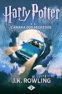
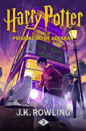
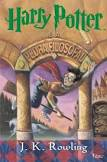

Estante de Livros
Sua biblioteca à um clique de distância
Sumário:
- Harry Potter e a Ordem da Fênix
- Harry Potter e a Câmara Secreta
- Harry Potter e o Enigma do Príncipe
- Harry Potter e o Prisioneiro de Azkaban
- Harry Potter e a Pedra Filosofal
Harry Potter e a Ordem da Fênix

Sinopse
Parece impossível, mas, no bairro mais Muggle do mundo Muggle, Harry é
emboscado por Dementors! Para salvar a sua vida e a do primo Dudley,
Harry não tem outra hipótese senão usar magia - mesmo sabendo que isso
significará a sua expulsão mais que certa de Hogwarts. Enquanto o
Ministério da Magia continua a não acreditar que o terrível Senhor das
Trevas está de volta, Voldemort e os seus fiéis Devoradores da Morte já
começaram a preparar o seu regresso ao poder. Porém, há uma nova
esperança: uma antiga ordem secreta, da qual os pais de Harry fizeram
parte, voltou a organizar-se e Dumbledore está atento.
Fonte: Google Books
| Data |
Autor |
Idioma Original |
Gêneros |
Número de Páginas |
Editora |
| 21 de junho de 2003 |
J.K. Rowling |
Inglês |
Romance, Ficção juvenil, Literatura fantástica |
702 |
Rocco |
Harry Potter e a Câmara Secreta

Sinopse
Os dias de Verão com os Dursleys estavam a tornar-se insuportáveis.
Harry Potter já não gostava muito de muggles, mas o pior é que tinha de
passar os seus dias de férias em casa dos mugglesmais muggles de todo o
planeta e arredores. Não havia maneira de voltar para a sua querida
escola de feitiçaria... E ultimamente mesmo esse regresso estava
ameaçado, pois o duende Dobby não parava de o avisar de que algo
terrível o aguardava em Hogwarts... Nada mais nada menos do que a
revelação dos misteriosos e ameaçadores poderes da câmara do segredos!
Fonte: Google Books
| Data |
Autor |
Idioma Original |
Gêneros |
Número de Páginas |
Editora |
| 02 de julho de 1998 |
J.K. Rowling |
Inglês |
Romance, Literatura infantil, Literatura fantástica, Alta fantasia
|
287 |
Rocco |
Harry Potter e o Enigma do Príncipe

Sinopse
Voldemort está mesmo de volta! Esta é a terrível confirmação que agita o
início do sexto ano na em Hogwarts. O seu crescente poder maléfico, e do
seu vasto exército de Devoradores da Morte, é cada vez mais visível, não
só no mundo da Magia como no mundo dos Muggles. Agora, mais do que
nunca, é necessário reunir forças para combater o mal, e, para isso,
Harry e Dumbledore visitam o passado misterioso de Voldemort, e o
coração da magia negra, e desvendam alguns segredos verdadeiramente
espantosos. Mas são muitos mais os enigmas que Harry terá de resolver,
entre eles, um muito em especial - quem é o príncipe misterioso a quem
pertenceu o livro sobre poções que Harry recebeu e que revela
conhecimentos poderosíssimos e letais?
Fonte: Google Books
| Data |
Autor |
Idioma Original |
Gêneros |
Número de Páginas |
Editora |
| 16 de julho de 2005 |
J.K. Rowling |
Inglês |
Romance, Literatura infantil, Literatura fantástica, Alta fantasia
|
543 |
Rocco |
Harry Potter e o Prisioneiro de Azkaban

Sinopse
Daquela vez Harry Potter não conseguira conter-se. Quebrara uma das
regras principais de Hogwarts - não exercer técnicas de feitiçaria fora
dos muros da escola. Mas aquela detestável Tia Marge merecia permanecer
umas boas horas suspensa no tecto da sala dos Dursleys, inchada como um
balão. Além disso já faltavam poucos dias para recomeçar as aulas. Mas o
seu terceiro ano não irá ser fácil. Da prisão de Azkaban fugira o feroz
Sirus Black, um dos mais fiéis seguidores do assustador Lord Voldemort
para o que Harry Potter continuava a ser o alvo favorito. O pior é que o
herói de J. K. Rowling começa a suspeitar da existência de um traidor
entre os seus próprios amigos...
Fonte: Google Books
| Data |
Autor |
Idioma Original |
Gêneros |
Número de Páginas |
Editora |
| 08 de julho de 1999 |
J.K. Rowling |
Inglês |
Romance, Literatura infantil, Literatura fantástica, Alta fantasia
|
367 |
Rocco |
Harry Potter e a Pedra Filosofal

Sinopse
Harry Potter é um garoto cujos pais, feiticeiros, foram assassinados por
um poderosíssimo bruxo quando ele ainda era um bebê. Ele foi levado,
então, para a casa dos tios que nada tinham a ver com o sobrenatural. No
dia de seu aniversário de 11 anos, Harry descobre sua verdadeira
história e seu destino: ser um aprendiz de feiticeiro até o dia em que
terá que enfrentar a pior força do mal, o homem que assassinou seus
pais. Potter fica sabendo que é a única pessoa a ter sobrevivido a um
ataque do tal bruxo do mal e essa é a causa da marca em forma de raio
que ele carrega na testa. Ele não é um garoto qualquer, ele sequer é um
feiticeiro qualquer; ele é Harry Potter, símbolo de poder, resistência e
um líder natural entre os sobrenaturais.
Fonte: Google Books
| Data |
Autor |
Idioma Original |
Gêneros |
Número de Páginas |
Editora |
| 26 de junho de 1997 |
J.K. Rowling |
Inglês |
Romance, Literatura infantil, Literatura fantástica, Alta fantasia
|
263 |
Rocco |